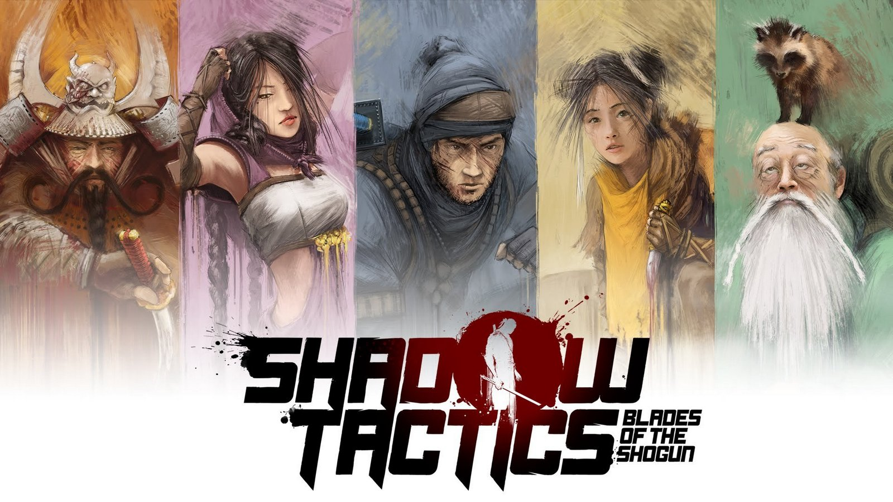

Retrospectiva săptămânii 3-9 iunie 2018
Retrospectiva săptămânii este rubrica duminicală în care trecem în revistă evenimentele săptămânii de pe frontul de gaming: știri şi articole (scrise de alții, bineînțeles, că e mai ușor aşa), industrie, lansări, oferte de jocuri, toate numai bune de savurat la cafeaua de duminică dimineața. (Și la care oricine poate contribui. 1 )
Ştiri
- Blizzard lucrează la un nou Diablo (PCGamer)
- Paradox cumpără Harebrained Schemes, studioul din spatele seriei Shadowrun Returns (RPS, Comunicat Paradox) (thx @joonior_bmf)
- CEO-ul Ubisoft nu vede un viitor prea lung consolelor, zice CEO-ul Ubisoft într-un interviu pentru Variety (tl;dr pe Ars Technica sau Game Informer)
- Facebook lansează programul Level Up în sprijinul streamerilor (GamesIndustry.biz, Gamasutra)
- După controversele de săptămânile trecute, Valve anunță într-o postare pe blog că politica Steam va deveni mult mai permisivă, admițând orice fel de jocuri, atâta timp cât nu sunt o trolleală evidentă sau au conținut ilegal. În același timp utilizatorii platformei vor avea posibilitatea să filtreze mai bine conținutul pe care nu-l doresc. Anunţul a stârnit o nouă controversă, mai jos aveţi doar câteva dintre exemplele de opinii publicate pe acest subiect:
- Op-ed: Valve takes a side by not “taking sides” in curation controversy (Ars Technica)
- Valve’s abdication of responsibility over Steam is the worst possible solution (RPS)
- Valve’s new content policy is a gutless attempt to dodge responsibility (GamesIndustry.biz)
- Steam’s new ‘anything goes’ policy is doomed from the start (PC Gamer)
- Why I’m not super excited about Valve’s new Steam policy (Robert Yang)
- Steam’s content policy is both arrogant and cowardly (Eurogamer)
- Steam’s Irresponsible Hands-Off Policy Is Proof That Valve Still Hasn’t Learned Its Lesson (Kotaku)
- “I support Valve in having an open platform” – Brenda Romero (VG247)
- Valve’s new policy on Steam games splits opinions among devs (Gamasutra)
- În perioada 12-14 iunie va avea loc E3 2018. Ca să fiţi pe fază.
- Program: PC Gamer, The Verge, Kotaku, Eurogamer
- Plus interesant: One Year Later: What Has Released Since E3 And What Hasn’t (Game Informer), The 7 best E3 moments ever (VG247)
- Thread discuţii pe forum
Articole (critică, dev, design)
- Indie hard mode: The couples making games together (PC Gamer)
- Student expectations, course marketing, and the invisible labour of game development (Kotaku)
- In Cultist Simulator, Death Is Only The Beginning (Kotaku)
- Gamespace Urbanism: City-Building Games and Radical Simulations (Failed Architecture) (plus interesant: Cinematic Tours of Cities: Skylines Megacities are So Relaxing (Kotaku) )
- A retrospective of Unreal, from the people who made it (RPS)
- Ted Dabney and the Untold Atari Story (Kotaku)
- (Poze frumoase) The Best Video Game Art of 2018* (Kotaku)
- Building Pillars of Eternity II without losing that Infinity Engine charm (Gamasutra)
- (Video) Weather Factory’s co-founders explain the making of Cultist Simulator (Gamasutra)
- How mods made The Binding of Isaac a phenomenon, and why Edmund McMillen’s laying it to rest (PC Gamer)
- The Lords of Midnight: on the legacy of a truly epic wargame (Eurogamer)
- How an ex-DreamWorks animator imbued Ghost of a Tale with character (Gamasutra)
- (Video) Bethesda Game Studios Veterans Explain Their Design Processes (Game Informer)
- (Video) Ebb and Flow - Conversations on the recent momentum of Japanese games (YouTube, thx @cg1700)
Made în România
- 5 iunie: Detroit: Become Human - interviu exclusiv cu regizorul adjunct Gregorie Diaconu (go4games.ro)
- 7 iunie: se lansează jocul Gray Dawn al moldovenilor de la Interactive Stone (Steam)
- 7 iunie: Amber lansează o reţea de studiouri de gaming (StartupCafe, ZonaIT, Go4Games - alegeţi un link, e acelaşi comunicat de presă pe toate)
Anunţuri şi lansări de jocuri
Anunţate
- 4 iunie: Europa, o frumuseţe de joc de la unul dintre artiştii Blizzard (Kotaku, Destructoid, PC Gamer)
- 5 iunie: Signalis, “a Lovecraft-inspired sci-fi story” (RPS, IndieGames)
- 6 iunie: Sezonul 3 din The Walking Dead şi-a stabilit data de lansare pe 14 august a.c. (RPS)
- 7 iunie: Generation Zero, un open-world plin de roboţi de la dezvoltatorii lui Just Cause (Eurogamer)
- Iratus: Lord of the Dead, o combinație de Darkest Dungeon cu Dungeon Keeper, are o campanie în derulare pe Kickstarter. Se va lansa la sfârșitul anului 2018.
- 7 iunie: Hitman 2 (trailer, RPS, Kotaku, GamesIndustry.biz). Renunţă la formatul episodic şi se lansează pe 13 noiembrie.
- 8 iunie: Twin Mirror , un thriller psihologic de la creatorii lui Life is Strange (Engadget, Eurogamer)
- 8 iunie: Dead or Alive 6, un nou titlu din bătrâna serie de fighting games (Eurogamer)
- 8 iunie: Just Cause 4
anunţatleakuit (Eurogamer, RPS)
Lansate
- 5 iunie: Vampyr (Steam)
- 5 iunie: Warhammer 40k: Inquisitor – Martyr (Steam) a ieșit din early access.
- 5 iunie: Realm Royale de la Hi-Rez, practic versiunea battle royale a lui Paladins
- 8 iunie: Totally Accurate Battlegrounds (un spin-off al mai vechiului Totally Accurate Battle Simulator) ce a apărut ca o parodie a genului battle royale, dar care a cunoscut un neaşteptat succes (Steam)
Oferte jocuri
Humble Bundle
- Daedalic 2018 Bundle - un bundle în care veți găsi câteva dintre point & click-urile Daedalic (Memoria, Deponia - The Complete Journey, Deponia Doomsday), câteva jocuri mai noi (Witch It!, The Long Journey Home) dar mai ales Shadow Tactics: Blades of the Shogun, un joc de stealth & tactics foarte apreciat de membrii forumului, pe care îl și alegem cu această ocazie pentru Recomandarea Săptămânii.
- Alte promoţii în store, cum ar fi Stories Untold (€2,49), Hotline Miami 2 (€3,74), On Rusty Trails (€3,24), We Are The Dwarves (€1,97) şi altele
Steam
- Pentru restul weekendului aveți posibilitatea să jucați gratuit Tooth and Tail. Dacă vă place îl puteți lua cu 9 euro (-55% reducere).
- Seria Tomb Raider este la reducere până luni. Dintre cele mai recente, Rise of the Tomb Raider costă acum 14,99 euro, iar reboot-ul din 2013 este disponibil pentru 2,99 euro. Titlurile clasice (I-VI) costă 1 euro fiecare).
- Până la sfârșitul zilei, Pathologic HD costă 1,94 euro (redus de la 12,99 euro)
- Alte promoţii: Project Zomboid (8,39€ - dar e puţin mai ieftin pe gog.com, DRM-free), Hard West (3,99€), Hard Reset Redux (2,99€), Breach & Clear (1,49€), Odallus: The Dark Call (1,99€), Don’t open the doors! (5,49€)
gog.com
- A început Summer Sale. Până pe 18 iunie peste 1000 de jocuri vor fi disponibile la reduceri de până la 90%. La 4,09 euro cheltuiți veți primi gratuit Sunless Sea, iar la 16,09 euro veți primi RiME.
Fanatical
- Un bundle pick and mix cu jocuri la alegere pentru 1 euro fiecare (sau chiar și mai puțin, dacă alegeți mai mult de 5 titluri). Câteva titluri care s-ar putea să vă atragă atenția: Serial Cleaner, Manual Samuel, The Little Acre (un adventure simplu și scurt, dar altfel foarte simpatic), Hue, 10 Second Ninja X
- Alte promoții: seria remastered a Monkey Island (adică The Secret of… și LeChuck’s Revenge) (€3.59), ELEX (€24.99), Grand Theft Auto V (€18.59), Dead Island Definitive Edition (€4.99), Bayonetta + Vanquish (€13.99) și multe altele.
Altele
- Pe GreenManGaming e o promoție Grand Theft Auto, unde puteți cumpăra GTA V cu £11.88 (aprox. 14 euro), precum și alte DLC-uri și alte titluri din serie
- E în desfășurare şi Paradox Summer Sale, cu reduceri de 50-80% la majoritatea titlurilor și DLC-urilor Paradox
Recomandarea săptămânii: Shadow Tactics

Shadow Tactics poate fi descris cel mai bine ca “Commandos în Japonia feudală”. E un joc de tactică și stealth în care controlezi mai multe personaje cu abilități diferite și e cel mai bun titlu de acest gen din ultimii (mulți) ani (bine, e și printre foarte puținele de acest gen). Nu e un titlu ușor, dar în buna tradiție de altădata, save & load funcționează foarte bine, iar jocul are și un demo.
- Cumpără: luați-l din promoția Daedalic 2018 Bundle, de pe Humble, că e cel mai ieftin și-l primiți și pentru Steam și DRM-free.
- Câteva review-uri: RPS, PC Gamer, Destructoid, Polygon, Nivelul 2
- Articole interesante: Postmortem: Mimimi’s Shadow Tactics: Blades of the Shogun, The Style and Texturing of Shadow Tactics, Made with Unity Spotlight: Shadow Tactics: Blades of the Shogun, Reddit AMA: Johannes from Mimimi Productions
- Discuții pe forum.
- Dacă ai citit vreun articol sau vreo știre interesantă și crezi că merită inclusă în retrospectiva săptămânii, te așteptăm cu recomandarea ta pe forum, pe unul din topicurile dedicate: Știri, Articole, Gaming România, Oferte jocuri [return]